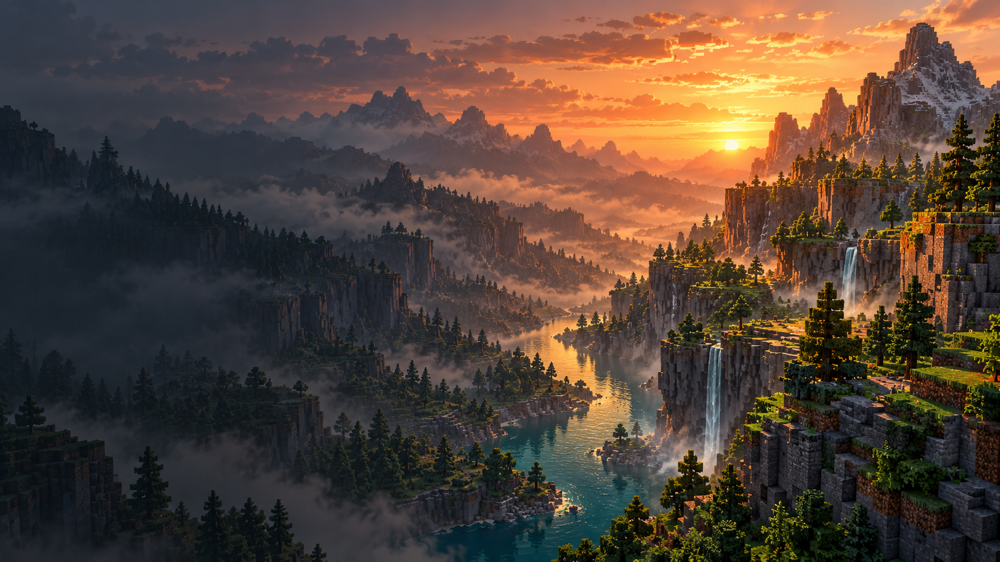

Всё по сборкам
Отдельные миры, ресурспаки и настройки. Переключайся между сборками в лаунчере.
Знакомый Minecraft. Другая основа.
Независимый клиент на Rust и свой лаунчер. На основе Horizon, с характером Atlas.
Windows x64v1.1.0217 MB
Minecraft на нативной основе Rust. Atlas объединяет игру и лаунчер: меньше возни с файлами, больше места для своих идей.

Отдельные миры, ресурспаки и настройки. Переключайся между сборками в лаунчере.
Выбирай совместимые нативные моды в каталоге Atlas и устанавливай в свою сборку.
Открытый код и обновления с GitHub. Можно следить за изменениями — или заглянуть внутрь.
Portable-версия для Windows. Скачай, распакуй и начни со своей первой сборки.
Скачать лаунчерРелизы и подробностиПолностью извлеки ZIP в отдельную папку.
Создай профиль и свою первую сборку.
Если нужны игровые файлы, лаунчер предложит их скачать.